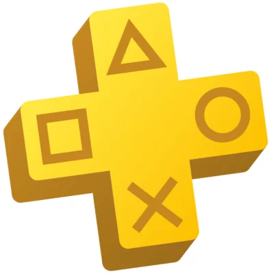

12 İyul 2026
Ghost of Yōtei üçün yeni gameplay yayımlandı
Ghost of Yōtei üçün yeni gameplay görüntüləri təqdim edildi. Oyunda döyüş sistemi və açıq dünya daha da inkişaf etdirilib.

10 İyul 2026
EA SPORTS FC 26 üçün yeni yeniləmə yayımlandı
Yeni yeniləmə ilə oyun balansı dəyişdirildi və müxtəlif texniki problemlər aradan qaldırıldı.

8 İyul 2026
PlayStation Plus bu ayın pulsuz oyunlarını açıqladı
İyul ayı üçün təqdim olunan PlayStation Plus oyunları rəsmi olaraq elan edildi.